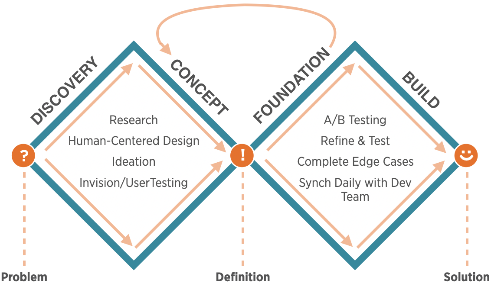

USAA Auto Quote Redesign


Overview
At USAA, I led the effort to redesign the Quote Results section of the Auto Insurance Acquisition application. This is where customers first see the price of their auto quote, learn about insurance coverages, and are able to customize their policy. It’s the most pivotal piece of the application where customers decide whether or not to buy the product.
My Role
Lead Designer — Led Design Process, Facilitated HCD Sessions, Designed UI, Created Prototypes, Tested Options, and Ensured Production Quality.
The Team — Myself, 2 Product Managers, 1 Product Owner, 3 IT developers.
The Process
USAA is a large organization with many stakeholders, requirements, and processes to coordinate in order to build a solution. Leading with a clear human-centered process helped define business vision and kept the project moving forward. I applied a human-centered approach comprised of four phases: Discovery, Concept, Foundation, and Build.
The Problem
When viewing the many features of their auto insurance quote, users were having trouble performing critical tasks such as finding bundling options, viewing insurance coverage features, and understanding how to buy the policy. They'd sometimes seek guidance via chat or phone, and sometimes leave without purchasing. This sub-optimal experience left users unhappy.
Discovery
Getting Started with Research
I started by conducting stakeholder interviews in order to understand the known pain points and web analytics. Next, I spent time observing Member Service Representatives (MSRs) who specialized in calls related to auto insurance acquisition. This allowed me to witness first hand how USAA customers interacted with our application. I also reviewed chat logs and member feedback related to the Auto app.
Measuring Against Competitors
I researched how we compared to our competitors by reviewing independent study reports from groups such as Forrester Research, Key Lime Interactive, and J.D. Power. I also performed competitive analysis on other insurance carriers such as Progressive and Geico.
Insights
I synthesized my findings and created a list of key insights including:
- USAA requires more steps to acquire insurance than our competitors > Users could be fatigued, so keep it simple.
- Users that interact with "Coverages" are more likely to purchase > Make coverages more enticing?
- Users struggled to understand differences between the packages > Offer a comparison view.
- Users missed the “Bundling” option > Give Bundling more prominence in closer proximity to the price.
- Users missed the CTA to purchase > Design CTA that follows a more conventional pattern.
Concept
Human-Centered Design Ideation

Empathy map exercise conducted with stakeholders.
After gathering insights from the Discovery Phase, I conducted design-thinking exercises with stakeholders including Business, IT, Member Service Representative, and Design partners in order to share understanding of the issues, ideate on solutions, and build consensus on the direction.
Reviewing the Existing Design
I audited the original design with a perspective based on my research thus far.
- Package Tabs - not intuitively clickable.
- Coverage Glance - probably not needed, consider the cognitive load.
- Bundling - easily missed, too far from price.
- Primary CTA - uncommon pattern, too far from eye-scan view.
- Policy Checker - easily missed.
- Coverage Item - too bulky
Audit of existing design identifying pain/talking points.
Design Concepts
I focused on creating a streamlined UI with a visual hierarchy based on the most important features to users:
- Price: Package Options, CTA to Purchase
- Coverages: Concise View, Editable, Contextual Help Available
- Summary: Brief Details, Editable
Considering the business needs, I was mindful of creating a design that could be tested and adapted well into the future. I planned for a modular design of sections that could be added or removed without compromising the integrity of the UI.
Initial Design - Design & Lo-Fi Testing
I sketched a draft design, critiqued it with my team, and created a higher fidelity comp in Sketch.

Initial Draft

Initial Concept
Initial Design - Testing
I created an Invision prototype and tested with Usertesting.com. The results were encouraging and revealing:
- Good - Users easily found price & CTA
- Good - Streamlined UI overall performed well
- Good - Coverage Glance wasn't missed
- Not so good - UI was a bit different from the rest of the app
- Not so good - Bundling performed better, but still not immediately noticeable
Final Design - Refine Design & Hi-Fi Testing
I used the feedback and observations from the user tests and to guide my next iteration of the UI. I drafted the refined design, critiqued it with my team, and created a higher fidelity comp in Sketch.
Final Draft

Final Concept
New Feature - Package Comparison View
From the HCD sessions, we recognized that users wanted a way to easily compare the different coverage packages. Although not in scope for the initial release, it made sense to provide a concept and add it to our test.
Package Comparison Modal
Final Design - Testing
I created a clickable prototype for testing using Sketch, Invision, and Usertesting.com.
The results were positive and we decided to move forward with A/B testing with real users on usaa.com.
Foundation
A/B Testing
Working with our partners on the Optimization Team, we coordinated tests with real users on usaa.com. Our tests were primarily focused on measuring two key areas:
- Packages - 1 new treatment
- Coverages - 2 new treatments
I provided a graphic representing the test structure for the team.
Packages (Header) - Testing one design against the original.
Coverages - Testing two separate designs against the original.
A/B Test Results and Impact
The new Package with Streamlined Coverages treatment resulted in a 24% lift during testing. It performed so well, that we moved this work from the 2nd quarter of the year to the 1st. It became the top priority.
Build
I worked closely with my development team to help guide the solution through to Implementation. These are some of the tasks I worked on:
- Identifying Solution Gaps
- Finalizing Accessibility Details
- Prioritizing Features for Backlog

Mockup provided to developers to identify gaps in the coded solution.
The Solution
Results
14%
LIFT IN PURCHASE STARTS43%
REDUCED PHONE CALLS AND CHAT CONVERSATIONS10
NEW FEATURES ADDED TO THE TEST BACKLOGIt’s common for improvements like this to get a 3% lift. We would have been elated to get 5%...14% was incredible! This redesign outperformed every change previously made to the Auto Acquisition flow.
Retrospective
Lead with Empathy
Open Eyes, Open Mind
Leading with empathy for users was critical. I came to this project with strong knowledge of the existing Auto app, but I learned so much more. There would have been no other method for me to learn the things I did without spending time observing users interacting with the app. It captured so much more than just the numbers or preconceived notions.
Teamwork Makes the Dream Work
Empathy for the team was critical. This project had many people that were new to Auto Insurance. In order to bridge gaps, I worked to understand and respect each perspective. It was much more than me helping others; the fresh perspective brought by new teammates helped to keep me accountable for challenging the "status quo."